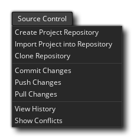
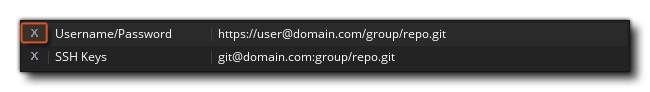

Source Control Management (SCM) is the name given to the method of working with sub-versions or backups of your projects through a repository and local source. Basically, an SCM solution is an independent software package which controls all the aspects of maintaining, changing and comparing versions of your project as you work on it. This is especially useful to those that work in a team and need to be able to control who does what and not worry about losing data or making changes that may need to be undone at a later date, but individuals can benefit from this powerful yet flexible system too.
There are various SCM tools available to you, and GameMaker Studio 2 comes with a Git plugin included which can be used straight away, and you have no need to install any extra packages as it is all bundled with the plugin itself. Below we give a small tutorial on how to set up this plugin and use the SCM tools with a project. At the bottom of the page we also give an overview of the SCM Context Menu, which is also referenced in the tutorial sections.
First of all, we need to setup an identity for Git to commit as, which means we need to go to the Plugins - Source Control (Git) section of the Preferences and add your authentication details.
This authentication identity will be used for all future projects, and GameMaker Studio 2 gives you two different ways that you can set it up:
- Username And Password: Clicking the "Add New User/Pass Authentication" button will present you with the following window where you can input the Repository URL, the Username and the Passord:
If you want this to affect just a specific repository then place the URL for the repository in the top field. However, if it's domain wide authentication you want (ie: "bitbucket.org" or "github.com" ) then just place the domain and nothing else. When something needs to check for authentication, it will look for a specific repository match first, and then a domain match. This will allow you to have a default authentication for a domain, and override with specific details for certain repositories later.
NOTE: If you are using an external repository, then you should be using the username and password associated with the account set up for that repository, but if you are wanting to use a local repository then you can use any username and password.
- SSH Keypairs: Clicking the "Add New SSH Keypair Authentication" will present you with the following window where you can input the Repository URL and Password before giving the paths to the Public Key and Private Key files required:
Like the Username/Password authentications, you can have domain and repository specific authentications when using SSH keypairs. If you already have an SSH Keypair generated, you can set the paths up here, as well as any password required to access them. Note that should you need quick access to the public key, the copy button
will automatically copy the contents to the clipboard for you. If you don’t already have an SSH Keypair, clicking on the Create KeyPair button will bring up a file dialog of where to place the private key, and the public key will be created adjacent to it - this will fill out the paths to the public and private keys automatically for you.
These settings will now be used to communicate with the repository (IE: Git Hub, Bit Bucket, etc.. ) when handling clone, push and pull requests. However you still need to set up the per-project options which can be done by opening up the Main Options and clicking the Enable Source Control option. This will activate SCM for the current project.Once you have enabled source control (and applied it or closed the Game Options) a new context menu will appear at the top of the IDE with the following option (which we'll explore in the rest of the sections of this page): 
NOTE: If you need to edit the authentication details again, just double click on the entry and the details window will open for you to edit, but you will not be able to rename the URL. If you need to change the URL then you will need to delete the authentication details and re-add. To delete the authentication details, click on the close button on the left of the row in the main Preferences window. 
You now need to link the GameMaker Studio 2 IDE to a repository:
- Create a Project Repository
- Push the current Project into an External Repository
- Clone an existing Repository
In the first case, creating a project repository, this will create a Git repository directly where your project is. In Git parlance this is a "non-bare repository", so Push/Pull make no sense in this case, but you can still commit and keep track of project changes, as well as revert changes and revisions if need be. To set this up, you just need to click Source Control > Create Project Repository on the main menu.
However, you may already have an existing project and want to put it into an external repository for tracking and sharing amongst your team. This requires an external repository to have been already set up, as well as the correct username and password set in your identity preferences to access it. If you have this ready then click Source Control > Import Project into Repository, and fill out the URL.
Finally, as a convenience function, you can Clone an external repository through the IDE. Again, you’ll need the username and password for the repository you are going to connect to setup in your identity preferences, and then it’s just a case of clicking Source Control > Clone Repository. Fill out the URL (using the HTTPS variant rather than SSH) and say where you want it to go.
Once the clone is done, it will automatically open up a file browser for you to open the project if you wish.
As you work on your project, you will naturally create sprites, edit scripts, delete timelines, and whatever else is required as your project develops over time. These are all actions which you may want to keep track of and get back should something go wrong. This is the main reason to use Source Control - so that any accidents can be reverted - and we will quickly take you through the basic workflow from start so you understand how this works.
Starting from the beginning, create a new GML project and then activate source control through the main options. This gives us access to the Source Control menu on the top, so we’ll immediately go and Create Project Repository. If you look at the room resources, you can see that the default room has gained a red exclamation
, meaning that it has been modified from it's last state. If we had other resources in the project, you'd see that they all have the same icon as shown in the image below:
We now have the option of either committing the blank project as it is, or getting it to a base state. For now, we'll do our first commit so click Source Control > Commit Changes. This will We'll now get a window split into three areas:
- Staged Changes - This represent the changes which will be committed to source. This will likely be blank, but it may show a Main Options change, which is fine.
- Unstaged Changes - This shows the files that have changed, but that we haven't told Git that we want to commit them - they're "pending" changes.
- Commit Message - This is a note that we can add to explain what the changes are.
For now, click the Stage All button, as we want to commit all the changes, and type something like "First Commit!" into the Commit Message and click Commit. All our resources should now have a green tick
, meaning there's no modifications found.
It is worth noting that as you work within this window, the various Staged and Unstaged messages will be prefixed by a symbol. The symbol being used will vary depending on the operation and file, with the following being used:
- [...] - Staged Change (was previously [A])
- [+] - Newly Added
- [->] - Renamed/Moved
- [-] - Removed
- [M] - Unstaged Changes
- [?] - Untracked File
- [!] - Missing File
Our work process can now begin, and we can start to build our project and save and commit changes, just as we've done in the paragraphs above.
After working for a while, you may want to check and see what you've committed at any given time, and so for that you'll want to open the Commit History. To open the history window you simply go to Source Control > View History which opens another window with three panes:
The top pane describes the commits, the middle pane describes the comment given to the selected commit, and the bottom pane describes the files that have been modified in this commit. Note that if you have set up a Diff Tool, then double-clicking on any file in this window will open the diff tool and you'll be able to see the changes between the files.
Above you've seen how to create a repository and commit things to it, but what happens if you make a mistake and want to "roll back" to a previous commit? Let's make a deliberate error and see how we can deal with it then...
First of all create a new resource - in this example we'll make a Script resource - and initially you'll see no status icon since as far as source control is concerned it doesn't exist exist yet. In the script resource add a simple line of code, like:
show_debug_message("Hello World");
If you now close the code editor, the script will save and the modified file icon
The changes staged will be:
- the .yyp project file
- a view file
- the script GML itself
- the .yy file referencing it
You should type in a commit message and then click the Commit button, just as we explained previously. Now, we go back to our script and change the line of code to (for example):
show_debug_message("Hello World, how are you?");
When we close the code editor, again a red icon will be shown beside the script, but we've realised that we made a mistake with our code and we want to roll back to a previous version to fix it (obviously, you could just open the script and fix it easily, since the example is so simple, but in large projects that's not normally a feasible approach). What we need to do is revert our changes.
To revert a change we first need to open up the commit window again, so we go to Source Control > Commit Changes once more. Our changed file will again be staged ready for committing, but this isn't what we want so we click the button Unstage All to take it out of the staging area.
If we now right click
on the file we changed we'll get a context menu with an option to Revert Path:
When you select this option, you will revert the files back to the previous state that they were in.
IMPORTANT! When you revert you will get a message asking you to reload or save the current project due to the file checker detecting changes on disk:You must hit Reload and not save, as saving will save what is memory rather than reloading the reverted files.
That's all great for when you edit something and want to change back without having already performed a commit, but what about when you have committed one or more changes and want to roll back to a previous commit? Well, let's edit our script again to say:show_debug_message("This is a bad idea");
Now we commit it as before to get it under source control. So, this was a bad idea and we want to roll back, which means to start with we need to open the Source Control > View History window again. We will see a list of all previous commits now in this window, starting with the initial commit, the commit for the script, and then the commit for the script that we have edited as a "bad idea":
We now have two choices. We can revert an entire revision - which will revert all files that were changed to those of the chosen commit - or we can choose to revert a path - which will simply revert a single file. Let's do the first option to start with:
- Right click
- Select Revert To This Revision and then choose ReLoad on the warning message.
You should see that the script now has a red status icon
We can then do a commit on the project and we'll be back to where we were once again. However we can also undo that action for the file and get our "bad idea" commit back by doing the following:
- Open the Commit Changes Window.
- Unstage the script with the "Hello World" code in it.
- Right click
Now we are back to having the erroneous file in the project again! Well, we can take this opportunity to revert only that file path instead of revrting everything to a previous revision. For that we need to do the following:
- Open the View History window.
- Click on the second commit (the "Hello World" commit).
- Right click
We should be back to having our "Hello World" code and we can then do a fresh commit to update the source control again with the corrected file.
When your project is stored in an external repository, you need to remember to both push your changes and pull any new ones. The reason for this is that when you commit, you store your changes locally, which allows you to work away from an internet connection and sync up when you're ready, and to sync up you push your changes to the remote repository. Pulling changes means that you want to pull any changes that others have made from the remote repository into your local repository. However, this means that there may be times when people can be editing the same files, which in turn creates a merge conflict. You need to know how to handle these conflicts so we're going to deliberately create one now and then show you how to deal with it.
NOTE: Sharing a local project repository (even through a file synchronization service like Dropbox) isn't recommended, as commits are generally written directly to it, and thus you have very little conflict protection.
To generate our conflict we first need to have two local repositories, one for the Master repository and one for our copy. To create this we need to Clone the repository, which is done with the following steps:
- Go to Source Control > Clone Repository.
- In the URL field, type the path to the project that we setup in the Reverting Files guide above (by default this will be D:\Users\<Username>\Documents\GameMakerStudio2\<ProjectName>).
- You then need to set a path to clone to:
When you click the "Okay" button you'll get the following warning about trying to clone a "non-bare" repository:
You can click "Okay" here again.
- You'll now be presented with a directory explorer to create a "bare" proxy repository (this is a repository which you can safely store on Dropbox, for example). Browse to where you want to create this proxy repository and select (or create) the folder to use.
Once you've done that, GameMaker Studio 2 will push your original project to the proxy, and pull a new one to the path you set in the Clone Repository window and then automatically open a file browser so you can open the stored project. If you now go to Source Control > View History we'll see our original commits plus a new "Push For Clone":You have now cloned your repository and can continue working on the local version of the project.
In this section we are going to look at resolving conflicts between a cloned local repository and a master repository (see the section on Cloning for more details). Assuming you are now using a local repository we'll need to edit a file and then cause some kind of conflict, so open the test script we've been using and change the "Hello World" message to something like this:
show_debug_message("Hello World, How Are You?");
You should now save the project and commit it to the local repository. Now, since we are linked to a remote master repository (even if it's one we've cloned to the same disk) we need to do a Push to get the changes on to master. For that, go to Source Control > Push Changes, which will give us a status update in the Source Control Output Tab:
We now need to open up our original project (not the cloned one), so browse to where you saved it on disk - or simply check the Recent Projects in the File menu, as it should be directly under the current one - and load it into GameMaker Studio 2. An easy way to check you have the right project is to simply check the script you have and if the message is "Hello World" then you have the right one, or you can open up the View History window and check that way.
You now need to edit the script again, so make it read something like this:
show_debug_message("This will cause a conflict.");
This can be saved to disk, and the changes committed, but if you try to push these changes you'll get the following message:
Someone has already pushed changes which you don't have yet! This means that you need to do a pull on the repository and see what exactly the issue is, so go to Source Control > Pull Changes. This will show two windows, the first is a warning about changed files (as with previous actions, you want to choose Reload here and not Save), and the other is the Conflicts window:
This window will show the conflicted files in a list to the left, and you can select the files from that list using the left mouse button
(or select multiple files using
+
- Use Theirs - This will overwrite the changes you have made with the one from the remote repository.
- Use Mine - This will overrule the changes from the remote repository with the ones you've just made.
- Merge - This will attempt to open an External Merge Tool to handle the conflict.
- Choose Merge Tool - This will let you configure the Merge Tool (see the section on Using An External Merge Tool below for more details).
Now, you can use the buttons to sort out the conflict, but before you do, let's just open the conflicted file to see exactly what the issue is. If you open the script that is conflicted it will now look like this:
This shows that "This Will Cause A Conflict" is on the HEAD (this is what we have pushed to the local repository) and that "Hello World, How Are You?" is being pulled from master, the remote repository. You can go back to the Conflicts window now and click on Use Theirs to pull the changed file and overwrite the current HEAD file. The script will now be flagged as changed and you should do a new commit and push before continuing.
Note that we could actually fix this in the GameMaker Studio 2 IDE. If we remove lines 1, 2, 3 and 5 so we are left with just show_debug_message(“Hello World, How Are You?”) and save it, it'll clear the conflict, as Git will assume that you know what you are doing with your own file. It is error prone, so it is recommended to install a merge tool, then configure and use that instead of manually trying to merge.
When you work on a project with other people, there's always a chance there could be a conflict, as multiple people edit the same file and most source control systems can make a good attempt at merging any conflicted files, but when there are changes in the same place, it requires a bit of help to know what to do – this is where a merge tool comes in to show you the changes, and let you decide.
As each merge tool is different, there are four macros that can be used to help specify files to it which can be set up from the Conflicts window by clicking the button labelledChoose Merge Tool:
When you click that button the Preferences window will open on the Git plugin:
Here you provide a path to the chosen merge tool and then a Merge Tool Options macro (or macros) to use when deciding what to do, with the following options available:
- ${scm_mine}: path to your version
- ${scm_thers}: path to their version
- ${scm_base}: path to the version before the conflicted changes occurred
- ${scm_merged}: path to where the merge tool should save to
As a help to setting up, when you give a path to certain merge tools, GameMaker Studio 2 will fill in some defaults to get started with, depending on the tool chosen:
- KDiff3: ${scm_theirs} ${scm_mine} -o ${scm_merged}
- Meld: ${scm_mine} ${scm_merged} ${scm_theirs}
- Notepadd++: ${scm_merged}
- TortoiseMerge: /base:${scm_base} /theirs:${scm_theirs} /mine:${scm_mine} /merged:${scm_merged}
Note that if you don't have (or don't want to use) a merge tool, then you can open up the script in the IDE and attempt to fix it from there.
So, back to our example Conflict as stated in the section above on Conflicts... You have done a pull from master and one of the files is conflicted. This opens the Source Control Conflicts window, where you can click on the conflicted script, and now click on Merge, since you have configured your merge tool. Clicking merge will now open the tool where you can deal with the conflict and then use the macro(s) supplied to make the required changes. Once you have finished and closed the merge tool, the GameMaker Studio 2 IDE will show the following confirmation window:
Simply answer "Yes" to this prompt as you've just done it yourself using the merge tool, and then you need to commit this change to signify the end of the merge operation (Source Control > Commit Changes. The Commit window will now show that a merge is in progress as well as show some unstaged files:
These unstaged files are our script file with the addition of .base, .ours and .theirs. We can safely delete all these so click
You can click Commit now.
Due to the fact that you can have issues with outher files, it means that your workflow when using remote or shared repositories should be as follows:
Make Changes > Save > Commit > Pull > Merge > Push
You should also set up a Diff Tool for use when doing commits to a repository. This is setup from the Preferences, same as for the Merge tool:
The Diff tool is configured in much the same manner as the Merge tool, but only uses the ${scm_base} and ${scm_theirs} options - in this case, ${scm_base} represents the unmodified file whereas ${scm_theirs} represents the current state of the file. The Tool Options should be pre-populated with the default options for Meld, KDiff3 and TortoiseMerge, just as they were for the Merge tool. Note that GameMaker Studio 2 does not support the outputting of single file diff patches, therefore there is no default for Notepad.
In order to view changes between current and previous revisions using the Diff tool, simply open up the Commit window and then double click on a file. If the tool has been setup correctly, it will be launched and you'll be able to see the changes between the files.


Source Control Context Menu
When you have activated Source Control for any project (see the section Setting Up The Source Control Git Plugin above for details), the GameMaker Studio 2 will show the following context menu at the top:
Here we outline each of the available options (most of them are explained in more depth in the tutorial sections above):
- Create Project Repository: This option permits you to
create a local repository in the same directory as your project
files.
- Import Project Into Repository: This option permits you
to import a project to an external repository.
- Clone Repository: This option will permit you to clone a
repository from a source to a new destination.
- Commit Changes: With this option you can stage changed
files in your project and then commit them to the repository.
- Push Changes: After doing a commit or a merge this
option is used to push the changes to the master repository.
- Pull Changes: With this option you can update the local
repository by pulling the changed files from the master
repository.
- View History: This will open the history window where
you can view all the version history of the project and choose to
roll back specific file paths or whole revisions.
- Show Conflicts: This will open the Conflicts window and list any conflicted files that may exist in the project, permitting you to deal with them either through the GameMaker Studio 2 IDE or using a specific Merge Tool.